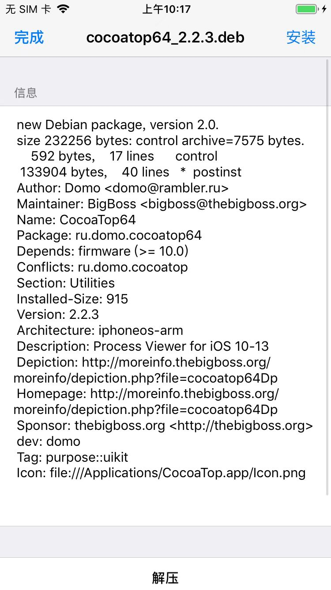

安装过程详解
先去下载CocoaTop的deb：
http://apt.thebigboss.org/repofiles/cydia/debs2.0/cocoatop64_2.2.3.deb
Filza安装CocoaTop的deb
把下载好的deb，用scp拷贝到iPhone中：
➜ CocoaTop64 pwd
/Users/crifan/dev/dev_tool/_reverse_security/iOS/TweakPlugin/CocoaTop64
➜ CocoaTop64 ll
total 912
-rw-r--r--@ 1 crifan staff 227K 11 26 10:14 cocoatop64_2.2.3.deb
-rw-r--r--@ 1 crifan staff 227K 6 6 2023 ru.domo.cocoatop64_2.2.3_iphoneos-arm.deb
➜ CocoaTop64 scp cocoatop64_2.2.3.deb root@192.168.2.37:/var/root/
cocoatop64_2.2.3.deb 100% 227KB 3.1MB/s 00:00
然后去Filza中去安装deb：
- 点击deb
- 点击：安装
- 
- 点击：动作
- 点击：
注销=Respring=重启桌面